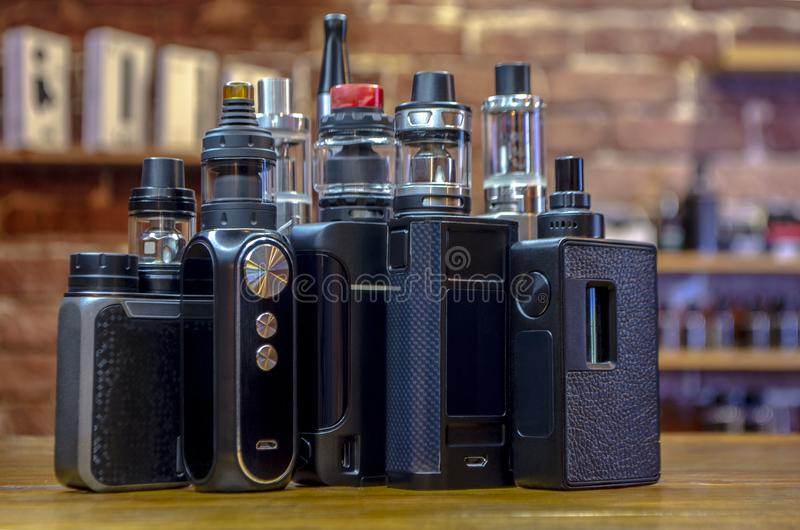

Info
Parts Of Vape

POWER BUTTON - Power On/Off or Select in Menu
AIRFLOW - The airflow's job is simple: to allow air to move freely from your coil to your mouth. The higher the airflow is, the cooler the vape. When you allow a maximum airflow, you can expect to experience a smoother and cooler cloud with less flavour.
+ and - BUTTON - Those who switch to vaping very quickly see great health benefits, including lower blood pressure, easier breathing, improved immune function, improved sense of taste and smell and improved lung function, all within the space of around a month.
Parts Of Atomizer
REPLACEABLE MOUTHPIECE - A vape mouthpiece can help keep your mouth from making contact with a hot device, make it easier to take a pull, and can give the vapor more time to cool before it reaches your mouth. Replacing the mouthpiece can also be an option if you prefer to not clean your vape mouthpiece.
GLASS POD - It gives a heavier and quality feel to your device. In addition, you'll also be able to clearly see your e-juicelevels, which may not be the case when considering other tanks. Even colored or otherwise designed glass tanks will still carry the translucent look, so knowing when you are about to run dry isn't a problem.
COIL - The reason why vaping manufacturers have been cramming more and more heating wires into their coils is because the total surface area of a vape coil is what determines its vapor production.